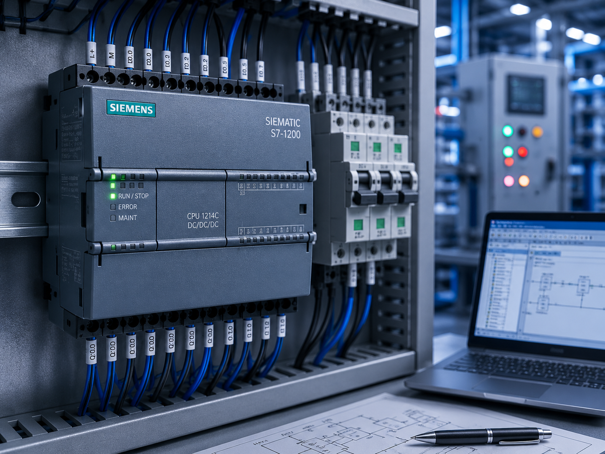
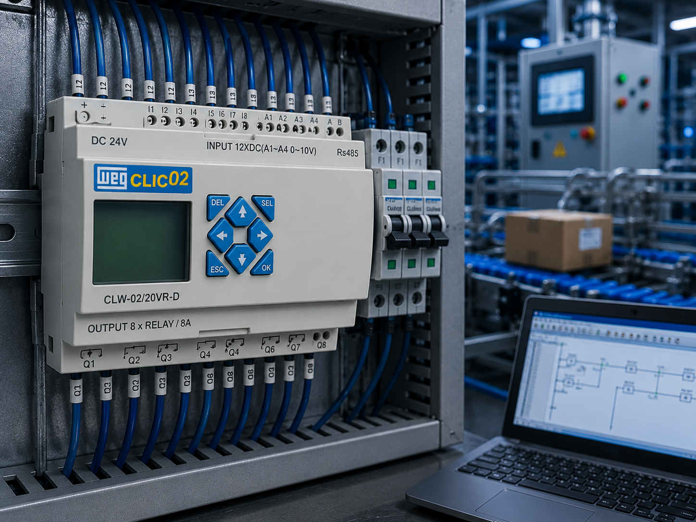
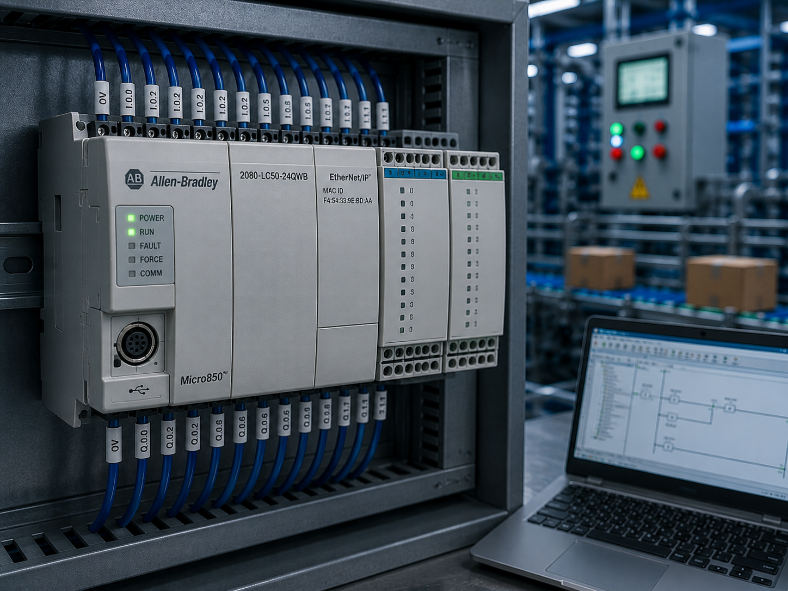
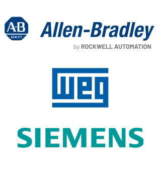

Programmable Logic Controller
O cérebro da automação industrial, responsável pelo controle lógico dos processos.
Conceito e Aplicação
O PLC é um controlador programável utilizado para automatizar, monitorar e controlar máquinas e processos industriais com segurança e eficiência.
- Controla máquinas e processos industriais;
- Recebe sinais de sensores e aciona atuadores;
- Programado para executar lógicas de controle;
- Amplamente utilizado em sistemas de automação industrial.
O Siemens SIMATIC S7-1200 CPU 1214C DC/DC/DC é um PLC compacto projetado para aplicações de pequeno e médio porte. Possui alimentação em corrente contínua (24 VDC), entradas e saídas digitais DC integradas, comunicação PROFINET e alto desempenho para controle de máquinas, processos industriais e sistemas de automação.
- CPU 1214C com alimentação em 24 VDC (DC/DC/DC);
- 14 entradas digitais e 10 saídas digitais integradas;
- Comunicação Ethernet PROFINET para redes industriais;
- Programação no software Siemens TIA Portal;
- Expansível com módulos de entradas, saídas e comunicação;
- Ideal para máquinas, painéis elétricos e processos automatizados.
Informações Complementares

Funcionamento
O PLC executa um programa armazenado em sua memória, processando sinais de entrada e acionando saídas para controlar máquinas e processos industriais automaticamente.
Saiba Mais
Aplicações
É utilizado em linhas de produção, painéis elétricos, sistemas de transporte, máquinas industriais e processos automatizados que exigem controle lógico.
Saiba Mais
Vantagens
Proporciona maior confiabilidade, flexibilidade e facilidade de manutenção, permitindo alterações na lógica de controle sem modificar a instalação elétrica.
Saiba MaisProjeto
Esta seção apresenta o fluxo completo de desenvolvimento de um quadro elétrico para automação industrial, desde a solicitação do cliente até a entrega da documentação técnica. Serão demonstrados o e-mail de contratação, o escopo do projeto, o layout do quadro elétrico, o orçamento, a proposta técnica, a lista de materiais e o diagrama elétrico, mostrando como funciona o processo utilizado por empresas e profissionais da área.
- E-mail de solicitação do cliente;
- Escopo técnico do projeto;
- Layout do quadro elétrico;
- Orçamento e proposta técnica;
- Lista de materiais com especificações e preços;
- Diagrama elétrico do projeto.
Após o recebimento do e-mail e do escopo enviado pelo contratante, inicia-se o desenvolvimento do projeto. Com base nas informações fornecidas, é elaborado o layout do quadro elétrico, permitindo definir os componentes necessários. Em seguida, é realizado o orçamento e preparada a proposta técnica para aprovação do cliente. Após a aprovação, é gerada a lista de materiais com as especificações e custos dos componentes, finalizando com a elaboração do diagrama elétrico, documento essencial para a montagem, instalação e manutenção do sistema de automação.
Após compreender o desenvolvimento do projeto, você poderá aprender a programar o CLP Siemens S7-1200 utilizando o software TIA Portal. O material apresenta os principais recursos da ferramenta, desde a criação do projeto até a programação, configuração do hardware e testes da aplicação. Clique aqui para acessar o tutorial.
Modelos 3D
PLC
Modelo 3D de um CLP Siemens, identificando seus módulos, entradas, saídas e conexões utilizadas na automação industrial.
Saiba MaisIndústria
Ambiente industrial em 3D para compreender a disposição dos equipamentos, máquinas e processos de uma planta automatizada.
Saiba MaisAutomação Industrial
Célula automatizada em funcionamento, com robôs e equipamentos integrados para aumentar a produtividade industrial.
Saiba MaisEmpresas
As principais empresas que fabricam CLPs são referências mundiais em automação industrial e controle de processos. Em 2025, diversas marcas se destacam pela confiabilidade, inovação tecnológica e desempenho em aplicações industriais.
A Siemens, a Allen-Bradley e a WEG estão entre as principais fabricantes de Controladores Lógicos Programáveis (CLPs), oferecendo soluções utilizadas em máquinas, linhas de produção e sistemas de automação industrial.
SIEMENS: Multinacional alemã líder em automação industrial. Seus CLPs da linha SIMATIC S7 são reconhecidos pela robustez, comunicação industrial avançada e integração com o software TIA Portal, sendo amplamente utilizados em processos industriais de pequeno, médio e grande porte.
ALLEN-BRADLEY: Marca da Rockwell Automation, referência mundial em automação industrial. Seus CLPs da família ControlLogix e CompactLogix oferecem alto desempenho, confiabilidade e integração com redes industriais, sendo muito utilizados em indústrias de manufatura e processos contínuos.
WEG: Empresa brasileira reconhecida mundialmente por suas soluções para automação e acionamentos elétricos. Além de motores e inversores de frequência, desenvolve CLPs e controladores industriais voltados para integração de máquinas, painéis elétricos e sistemas automatizados, destacando-se pela facilidade de programação e excelente custo-benefício.
